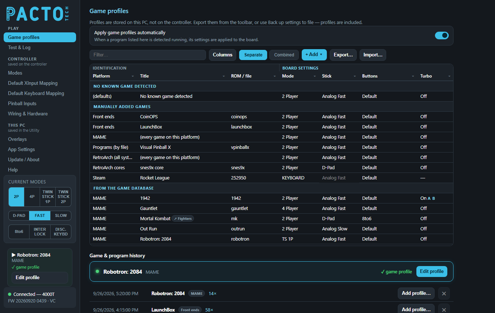
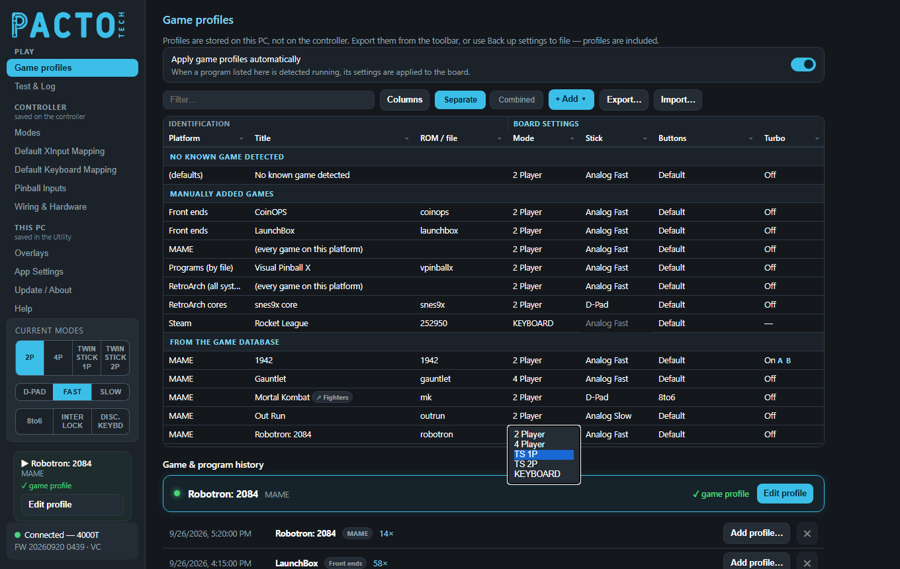
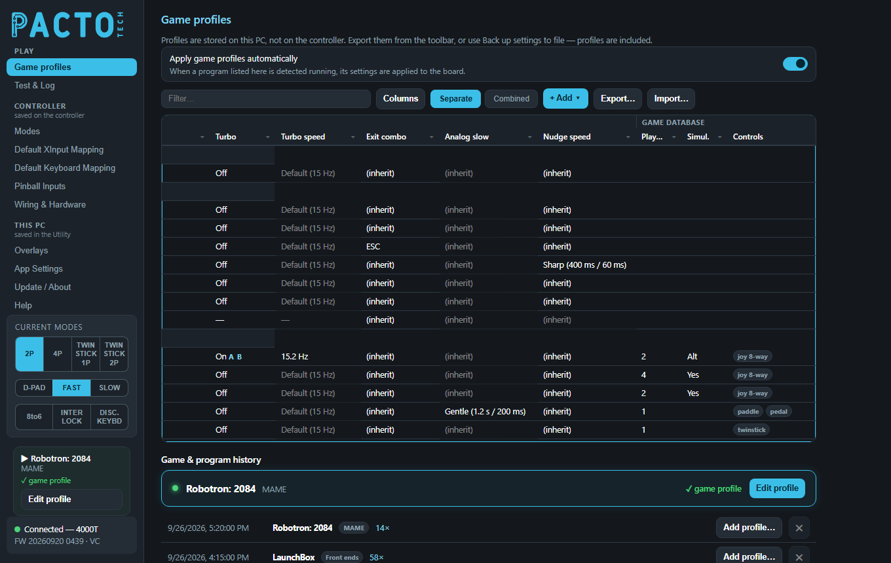
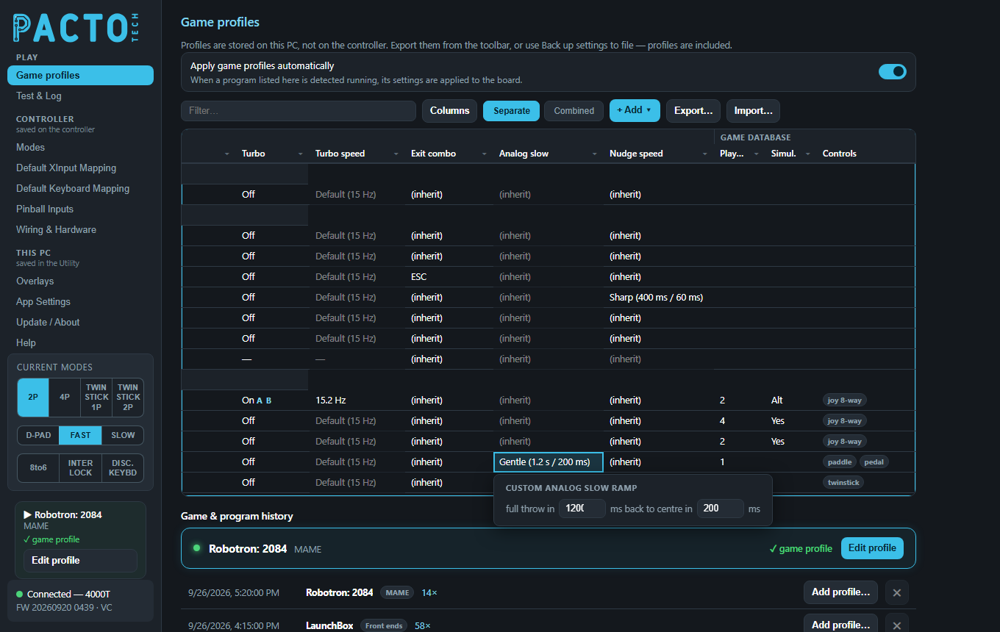
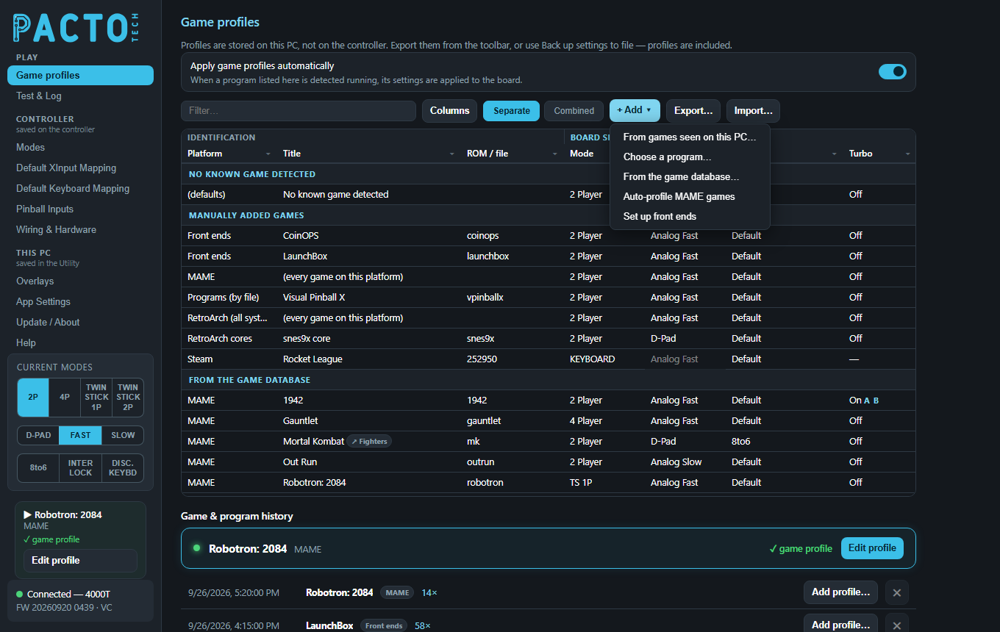
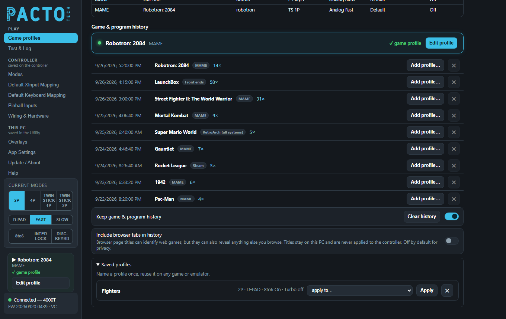

Game profiles
Tell the Utility how your controls should be set for each game, emulator or program. It notices what is running, switches the board for you, and puts it back when you are done.

Game profiles is the first page in the sidebar's Play group, and the page the Utility opens on. Profiles are stored on this PC and apply straight away: there is no Save button.
What a game profile is
A game profile is a small set of board settings (player mode, stick output, button layout, turbo and exit combo) tied to one game, one emulator, one RetroArch core, one front end or one Windows program.
While the Utility runs, it watches which program is in front. When a profiled game starts, the
Utility sends that profile to the board. When the game closes, the board goes back to your
resting profile, the row called No known game detected.
You can also change modes from a front end with scripts (see Change modes with scripts). For most cabinets game profiles are easier and more reliable:
- Nothing to add to each game's launch settings in your front end.
- The board is always put back when the game ends, even if the game crashes or you quit it another way.
- Profiles can do things scripts can't, such as turbo on chosen buttons, button remaps and a per-game exit combo.
Export… or
Back up settings to file on App Settings to keep a copy (the backup
includes profiles).Quick start
- Make sure Apply game profiles automatically is on (it is by default).
- Start the game once from your front end, then switch back to the Utility. The game now shows under Game & program history.
- Click
Add profile…on that line and pickThis game only. A new row appears in the table with the standard settings (2 Player, Analog Fast, Default buttons, Turbo Off). - Double-click the cells you want to change, for example Mode or Stick, and pick a
value. It saves by itself (a small
Savednote flashes). The profile is used from the next time the game starts.
How detection works (Windows)
About every 2.5 seconds the Utility looks at the program in the foreground and works out what it is:
| What is in front | How the Utility recognises it |
|---|---|
| A Steam game | The program lives inside one of your Steam library folders. Every installed Steam game is already listed, even before you play it. |
| A front end | Steam, Steam Big Picture, RetroFE, HyperSpin, LaunchBox, LaunchBox Big Box, Attract-Mode, EmulationStation, Pegasus, Playnite, CoinOPS and Maximus Arcade are recognised by their program name. |
| An emulator and its game | More than 30 emulators are recognised, including RetroArch, MAME, FinalBurn Neo, Dolphin, PCSX2, DuckStation, PPSSPP, Snes9x, Flycast, Supermodel and TeknoParrot. The game (ROM) comes from the emulator's command line when it has one, otherwise from the window title. |
| A RetroArch core | Read from RetroArch's command line, so you can give every game
on one core (for example snes9x) the same profile. |
| A program you picked | Any program you added with Choose a program…,
matched by its file name. |
| Any other program | After 10 seconds in front it is recorded as a Windows game, so it shows in the history and can get a profile. Desktop tools such as Explorer, Office, Discord or VLC are ignored. |
Web browsers never trigger a profile. See Privacy.
Which profile wins
When a game starts, the Utility uses the most specific profile it finds:
- This game: a row for that exact game (or that front end, Steam game or program).
- The RetroArch core: a
RetroArch coresrow, for RetroArch games. - The emulator: an
(every game on this platform)row. - Nothing found: the board stays in the
No known game detectedresting profile.
The sidebar and the now-playing card tell you which one was used, for example
✓ game profile, ✓ core default (snes9x) or ✓ emulator default.
The columns you edit
The table has three column groups: Identification (Platform, Title, ROM / file), Board settings (the columns below) and Game database (information only). Scroll right to see all of them.

To change a cell, double-click it, or select it and press Enter or F2, or just start typing, then pick from the list. Select several rows (drag, or Shift+click) and change one cell to set the same value on every selected row.
Mode
| Option | What it does |
|---|---|
2 Player | Two-player layout. |
4 Player | Four-player layout (4-player boards). |
TS 1P | Twin stick: one player uses two joysticks as the left and right sticks of one gamepad. |
TS 2P | Twin stick for two players, two joysticks each (4-player boards). |
KEYBOARD | For games that only work with a gamepad. The board's arcade gamepads leave the PC and it becomes a keyboard, so your DongleMaster gamepads take over as the players. When the game ends the arcade controls come back. Windows needs about 12.5 seconds to forget controllers, so there is a short countdown each way. |
Stick
| Option | What it does |
|---|---|
D-Pad | Joysticks report as the d-pad. |
Analog Fast | Joysticks report as an analog stick at full tilt straight away. |
Analog Slow | The analog stick ramps up gradually, tuned under Modes → Analog Slow (or per game with the Analog slow column below). Good for driving and flying games. |
The Stick cell is greyed out when Mode is KEYBOARD (it is kept for when you change back).
Buttons
| Option | What it does |
|---|---|
Default | No changes to the buttons, and 8-to-6 off. |
8to6 | Turns on the 8-to-6 button shuffle for 6-button fighting games on an 8-button panel. |
Custom (match players) | Opens Custom controls: choose what each
button does. The same mapping is used for every player. (no change) leaves a button
as the board has it. |
Full custom | Opens Custom controls with a grid of every button for every player position. Send any input to any player's button, or to a keyboard key. |
Custom rows show a ✎ button in the cell to reopen the editor. Custom button maps only apply while that game runs; your normal remaps on the Default XInput Mapping page stay as they are.
Turbo
| Option | What it does |
|---|---|
Off | Turbo is off for this game, even if the panel's turbo is on. |
On | The chosen buttons autofire while held. When you switch a row
from Off to On, a Turbo buttons box opens with LB, RB, A, B, X, Y, LT and RT (A is ticked
to start). The cell then lists the buttons, for example On A B. |
While the game runs, the profile's turbo setting replaces whatever turbo the panel had. When
the game ends it is cleared again. To change the buttons later, pick On again and the
Turbo buttons box reopens. A cell showing — means the row doesn't change turbo at all.
Turbo speed
How fast turbo fires: Default (15 Hz), 29 Hz (max), 20 Hz,
15 Hz, 12 Hz, 10 Hz, 7.5 Hz, or Custom…
(type the on and off times in milliseconds, 5 to 1000 each). It is greyed out while Turbo is Off.
Exit combo
What the cabinet's EXIT button (or holding START+BACK when interlock is on) sends while this game runs.
| Option | What it does |
|---|---|
(inherit) | Use the setting of the No known game detected row. |
START+BACK | The standard behaviour: player 1 presses START and BACK together. |
ESC, Q, ALT+F4, CTRL+Q, CTRL+F9 |
The board types that key combination instead, even while it is a gamepad. ESC quits
MAME, and ALT+F4 closes most Windows programs. |
Custom… | Press up to 3 keys (with Ctrl, Shift, Alt or Windows if you
like), then Save. |
No known game detected row is also saved on the
board as its standard exit, so it keeps working even when the Utility isn't running.Analog slow and Nudge speed

Analog slow sets how the stick feels in Analog Slow for this game: how long it takes
to reach full throw while you hold it, and to return to centre when you let go. Nudge speed does the
same for the pinball nudges (Nudge Left, Right and Up rows set to ANALOG SLOW on the
Pinball Inputs page).
| Option | Analog slow | Nudge speed |
|---|---|---|
(inherit) | Use the No known game detected row's value; if that is
(inherit) too, the board's own Analog Slow (Modes page) / Pinball Inputs settings. | |
Gentle / Soft | 1.2 s out, 200 ms back (driving games) | 1.5 s out, 250 ms back |
Medium | 650 ms out, 110 ms back (the board's shipped feel) | 1 s out, 110 ms back |
Quick / Sharp | 300 ms out, 60 ms back | 400 ms out, 60 ms back |
Custom… | Type both times in milliseconds (10 to 30000 each). | |

Custom… opens a box for the two times.The ramp only changes while the game runs and is never saved on the board, so the Analog Slow settings on the Modes page and the Pinball Inputs page keep their own values. Analog slow is greyed out on rows whose Stick is D-Pad or Analog Fast, as a hint that it only matters in Analog Slow (the panel's stick switch can still select it).
More ways to edit
- Right-click a row for
Copy profile,Paste profile,Reset to defaults,Remove profile(s),Edit custom controls…,Save as reusable profile…and oneUse saved profile: <name>line for each saved profile. With several rows selected, the menu acts on all of them. - Ctrl+C / Ctrl+V copy and paste a single cell.
- Delete resets the selected board-setting cells to their standard values.
- Click a column heading to sort. Click its ⏷ button to filter that column.
The + Add menu

+ Add ▾ menu.| Option | What it does |
|---|---|
From games seen on this PC… | Everything the Utility has seen running,
grouped by emulator. Pick one game, or the emulator's every game line for an
emulator-wide profile. Installed Steam games are listed here too. |
Choose a program… | Pick a program file (.exe). Whenever a program with that name is in front, its profile is used. Handy for PC games that aren't detected by themselves. |
From the game database… | Opens Known games: popular games for each
emulator. Press + to add one before it has ever run on this PC. |
Auto-profile MAME games | Creates profiles for the MAME and FinalBurn Neo games seen on this PC and in the arcade catalog, using the built-in arcade database: player count, twin-stick games, and turbo for the shoot-'em-ups that want it. Profiles are matched to your board, existing profiles are never overwritten, and a note tells you how many were created. |
Set up front ends | Gives every supported front end
2 Player · Analog Fast · Turbo off · 8to6 off, so menus always work the same way. |
New rows start with the standard settings (2 Player, Analog Fast, Default, Turbo Off).
Game & program history
The now-playing card shows the game running right now, its emulator, and which profile was
applied (or no profile). Edit profile jumps to that game's row, creating one
with the standard settings if it doesn't have one yet. The same information sits in the sidebar on
every page, with its own Edit profile button.
Below it, every play is listed with the newest first: date and time, the game, its emulator or
front end, and how many times it has been played (for example 14×).
Add profile…offers the places a profile can go:This game only,Every game on the snes9x core(RetroArch), orEvery game on this emulator. Steam games, front ends and Windows programs just offerThis program. The best choice is markedrecommended, and choices that already have a profile sayalready profiled. Picking one adds the row and jumps to it.- The
✕button removes that line from the history. - Keep game & program history turns the history on or off.
Clear historyempties it. - Include browser tabs in history (off by default). See Privacy.
Saved profiles
A saved profile has a name and can be shared by many rows. Set it up once and reuse it on any game, emulator or core.
- Create one: set up a row the way you want, right-click it and choose
Save as reusable profile…. Type a name (for exampleFighters) and pressSave. The row's settings are saved under that name, and the row (and any other selected rows) now use it. If the name already exists, the Utility asks you to pressSaveagain to replace it. - Use it: select one or more rows, right-click and choose
Use saved profile: Fighters. This works on game, emulator and core rows. On theNo known game detectedrow it copies the saved settings into the row instead.
Rows that use a saved profile show a small ↗ chip with its name next to the title, for example
Mortal Kombat ↗ Fighters in the screenshots. Hover the chip for a reminder.

Open Saved profiles at the bottom of the page to see each one with a summary of its settings:
- Choose a game in
apply to…and clickApplyto make that game use it. The list offers the games seen on this PC. ✕deletes a saved profile. Rows that used it keep its settings as their own copy.
The spreadsheet (next section) can also create saved profiles: a row with Target Type named
and the profile's name in Key. To make any row use it, type the name in that row's Uses Named
column.
Spreadsheet, filter, columns and views
| Control | What it does |
|---|---|
Export… | Saves every profile to an Excel file
(pacto-game-profiles.xlsx). The Profiles sheet has one row per profile with
drop-down lists, and the Help sheet explains every column. Edit it in Excel, or with an AI tool. |
Import… | Reads the spreadsheet back. Rows with a mistake are skipped and listed in an Import profiles report; everything else still imports. Import adds and updates rows, and never deletes anything. |
Filter… | Shows only rows whose platform, title or ROM contains what you type. |
Columns | Show or hide columns. The Game database group (Players, Simul., Controls, Buttons, Clone of, Status, Played) can be switched off as a whole. |
Separate | Splits the table into No known game detected, Manually added games and From the game database. |
Combined | One sorted list, with a small DB or M
tag showing where each row came from. |
In the Game database columns, Status shows Modified when you changed a database
game from what the database would pick, and Played counts how often it ran.
Switching it off, and the resting profile
Apply game profiles automatically turns the whole feature on or off. When you switch it off, the Utility puts the board back the way it was before game profiles changed it, then leaves the board alone. It also stops watching programs, so nothing new goes into the history.
The No known game detected row is the resting profile: the board sits in it
whenever no profiled game is running, and returns to it each time a game ends. If a game has no
profile at all, the board simply stays in the resting profile. On older installs this row may say
Set up. Until you click it, the board keeps its own settings between games and each
game's changes are undone when it ends.

The same summary appears in the Which modes are active? card on the Modes page
(here 2P · FAST · 8to6 Off · Turbo off). Its Edit… button jumps straight to the row.
If it reads Not set up — board defaults apply, the resting profile hasn't been set up yet. The card also
explains how the resting profile fits between the board's power-on defaults and live mode changes.
Worked examples
These match the table in the screenshots above.
1. Fighting games: 8-to-6 and d-pad
Mortal Kombat uses the saved profile Fighters (2P · D-PAD · 8to6 On · Turbo off), so every
fighting game can share one setup.
- Play Mortal Kombat once so it shows in the history, then add its row with
Add profile…. - Set Mode
2 Player, StickD-Padand Buttons8to6. - Right-click the row, choose
Save as reusable profile…, typeFightersand pressSave. The row now shows↗ Fighters. - For the next fighting game (Street Fighter II, for example), add its row, right-click it and choose
Use saved profile: Fighters.
2. A 4-player game: Gauntlet
- Play Gauntlet once, then click
Add profile…on its history line and pickThis game only. - Set Mode to
4 Player.
Menus and every other game stay in 2 Player. Only Gauntlet switches to all four players.
3. A twin-stick game: Robotron: 2084
- Add Robotron: 2084 the same way (or use
Auto-profile MAME games, which knows it is a twin-stick game). - Set Mode to
TS 1P. The two joysticks become the left and right sticks of player 1.
4. A shoot-'em-up with turbo: 1942
- Add 1942, then set its Turbo cell to
On. - In Turbo buttons, tick A and B. The cell reads
On A B. - Optional: choose a Turbo speed.
Default (15 Hz)suits most games.
5. Every SNES game: the snes9x core
- Play any SNES game in RetroArch with the snes9x core (Super Mario World in the history above).
- Click
Add profile…and pickEvery game on the snes9x core. - Set Stick to
D-Pad. The row appears underRetroArch coresassnes9x core.
Every game on that core now gets the d-pad, while other RetroArch games use the RetroArch row.
6. A modern gamepad game: Rocket League on Steam
- Click
+ Add ▾›From games seen on this PC…and pick Rocket League under Steam (installed Steam games are already listed). - Set Mode to
KEYBOARD.
When Rocket League starts, the arcade gamepads leave the PC and your DongleMaster gamepads become the
players. When it closes, the arcade controls come back. Stick is greyed out and Turbo shows
—: in keyboard mode the Utility changes nothing else on the board while the game runs.
7. A driving game with a gentler stick: Out Run
- Add Out Run (MAME) from the history or
+ Add ▾. - Set Stick to
Analog Slowand Analog slow toGentle.
Steering now eases in over 1.2 seconds in Out Run only; every other game keeps the board's own Analog Slow feel.
(every game on this platform) in these examples has its Exit
combo set to ESC, so the cabinet's exit button quits MAME games that have no row of their
own. A game with its own row uses that row's Exit combo, and (inherit) there means the
resting profile's setting, not the MAME row's. To give those games ESC too, select their rows and set
Exit combo once.Privacy
- Profiles, the list of games seen and the play history are stored on this PC, in
%LOCALAPPDATA%\PactoConfigurator. The history keeps up to 1000 entries. You can remove single lines or clear it, or switch it off. - Include browser tabs in history is off by default. When on, a browser page title that
stays in front for 10 seconds is added to the history, which helps you find web games. Browser
titles are never used for profiles and never change the controller. To give a browser a profile on
purpose, use
Add profile…on its line, which makes a profile for that browser program.
Linux (PactoLink)
PactoLink on Linux (Batocera, RetroPie, Lakka) also supports game profiles, through its web page at
http://<machine-ip>:46810. It recognises the running emulator, game and RetroArch
core from the emulator's command line, and uses the same emulator names and game keys as Windows.
On a new Linux install there is no resting profile: the board keeps its own settings between games,
and each game's profile is undone when the game ends. This has been tested in virtual machines so far.